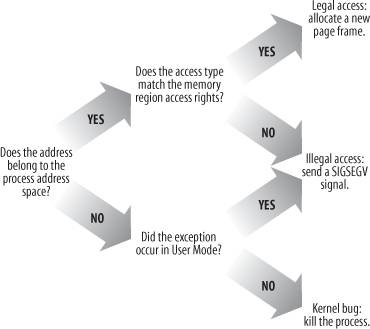
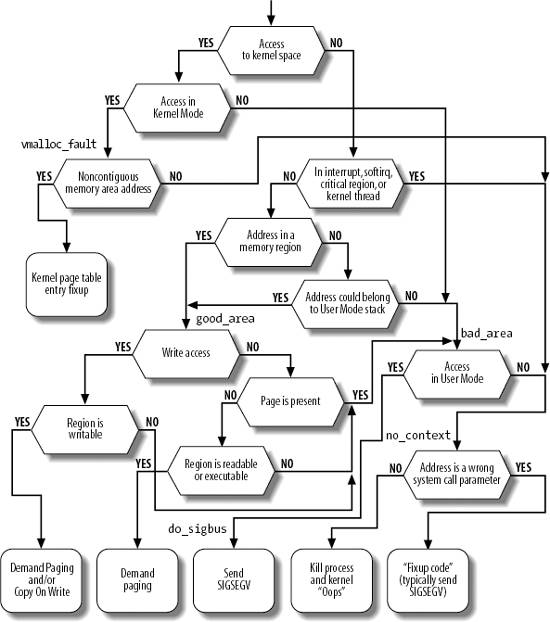

{% include JB/setup %}
{% raw %}
<div>


<a name="understandlk-CHP-9-SECT-4"></a>
<h3 class="docSection1Title">9.4. Page Fault Exception Handler</h3><a name="IDX-CHP-9-2423"></a>
<a name="IDX-CHP-9-2424"></a>
<a name="IDX-CHP-9-2425"></a>
<a name="IDX-CHP-9-2426"></a>
<a name="IDX-CHP-9-2427"></a>
<p class="docText1">As stated previously, the Linux Page Fault exception handler<a name="IDX-CHP-9-2428"></a> 
 must distinguish exceptions caused by programming errors from those caused by a reference to a page that legitimately belongs to the process address space but simply hasn't been allocated yet.</p>
<p class="docText1">The memory region descriptors allow the exception handler to perform its job quite efficiently. The <tt class="calibre25">do_page_fault( )</tt> function, which is the Page Fault interrupt service routine for the 80 x 86 architecture, compares the linear address that caused the Page Fault against the memory regions of the <tt class="calibre25">current</tt> process; it can thus determine the proper way to handle the exception according to the scheme that is illustrated in <a class="pcalibre5 docLink pcalibre1" href="#understandlk-CHP-9-FIG-4">Figure 9-4</a>.</p>
<a name="understandlk-CHP-9-FIG-4"></a><p class="calibre14"><center class="calibre8">
<h5 class="docFigureTitle">Figure 9-4. Overall scheme for the Page Fault handler</h5>
</center></p><br class="calibre7"/>
<p class="docText1">In practice, things are a lot more complex because the Page Fault handler must recognize several particular subcases that fit awkwardly into the overall scheme, and it must distinguish several kinds of legal access. A detailed flow diagram of the handler is illustrated in <a class="pcalibre5 docLink pcalibre1" href="#understandlk-CHP-9-FIG-5">Figure 9-5</a>.</p>
<p class="docText1">The identifiers <tt class="calibre25">vmalloc_fault</tt>, <tt class="calibre25">good_area</tt>, <tt class="calibre25">bad_area</tt>, and <tt class="calibre25">no_context</tt> are labels appearing in <tt class="calibre25">do_page_fault( )</tt> that should help you to relate the blocks of the flow diagram to specific lines of code.</p>
<p class="docText1">The <tt class="calibre25">do_ page_fault( )</tt> function accepts the following input parameters:</p>
<ul class="calibre11"><li class="calibre12"><p class="docText1">The <tt class="calibre25">regs</tt> address of a <tt class="calibre25">pt_regs</tt> structure containing the values of the microprocessor registers when the exception occurred.</p></li><li class="calibre12"><p class="docText1">A 3-bit <tt class="calibre25">error_code</tt>, which is pushed on the stack by the control unit when the exception occurred (see "<a class="pcalibre5 docLink pcalibre1" href="understandlk-CHP-4-SECT-2.html#understandlk-CHP-4-SECT-2.4">Hardware Handling of Interrupts and Exceptions</a>" in <a class="pcalibre5 docLink pcalibre1" href="understandlk-CHP-4.html#understandlk-CHP-4">Chapter 4</a>). The bits have the following meanings:</p><ul class="calibre61"><li class="calibre12"><p class="docText1">If bit 0 is clear, the exception was caused by an access to a page that is not present (the <tt class="calibre25">Present</tt> flag in the Page Table entry is clear); otherwise, if bit 0 is set, the exception was caused by an invalid access right.</p><a name="understandlk-CHP-9-FIG-5"></a><p class="calibre14"><center class="calibre8">
<h5 class="docFigureTitle">Figure 9-5. The flow diagram of the Page Fault handler</h5>
</center></p></li><li class="calibre12"><p class="docText1">If bit 1 is clear, the exception was caused by a read or execute access; if set, the exception was caused by a write access.</p></li><li class="calibre12"><p class="docText1">If bit 2 is clear, the exception occurred while the processor was in Kernel Mode; otherwise, it occurred in User Mode.</p></li></ul></li></ul>
<p class="docText1">The first operation of <tt class="calibre25">do_ page_fault( )</tt> consists of reading the linear address that caused the Page Fault. When the exception occurs, the CPU control unit stores that value in the <tt class="calibre25">cr2</tt><a name="IDX-CHP-9-2429"></a> 
 control register:</p>
<pre class="calibre27">
    asm("movl %%cr2,%0":"=r" (address));
    if (regs-&gt;eflags &amp; 0x00020200)
        local_irq_enable( );
    tsk = current;</pre><br class="calibre7"/>
<p class="docText1">The linear address is saved in the <tt class="calibre25">address</tt> local variable. The function also ensures that local interrupts are enabled if they were enabled before the fault or the CPU was running in virtual-8086 mode, and saves the pointers to the process descriptor of <tt class="calibre25">current</tt> in the <tt class="calibre25">tsk</tt> local variable.</p>
<p class="docText1">As shown at the top of <a class="pcalibre5 docLink pcalibre1" href="#understandlk-CHP-9-FIG-5">Figure 9-5</a>, <tt class="calibre25">do_ page_fault( )</tt> checks whether the faulty linear address belongs to the fourth gigabyte:</p>
<pre class="calibre27">
    info.si_code = SEGV_MAPERR;
    if (address &gt;= TASK_SIZE ) {
        if  (!(error_code &amp; 0x101))
            goto vmalloc_fault;
        goto bad_area_nosemaphore;
    }</pre><br class="calibre7"/>
<p class="docText1">If the exception was caused by the kernel trying to access a nonexisting page frame, a jump is made to the code at label <tt class="calibre25">vmalloc_fault</tt>, which takes care of faults that were likely caused by accessing a noncontiguous memory area in Kernel Mode; we describe this case in the later section "<a class="pcalibre5 docLink pcalibre1" href="#understandlk-CHP-9-SECT-4.5">Handling Noncontiguous Memory Area Accesses</a>." Otherwise, a jump is made to the code at the <tt class="calibre25">bad_area_nosemaphore</tt> label, described in the later section "<a class="pcalibre5 docLink pcalibre1" href="#understandlk-CHP-9-SECT-4.1">Handling a Faulty Address Outside the Address Space</a>."</p>
<p class="docText1">Next, the handler checks whether the exception occurred while the kernel was executing some critical routine or running a kernel thread (remember that the <tt class="calibre25">mm</tt> field of the process descriptor is always <tt class="calibre25">NULL</tt> for kernel threads<a name="IDX-CHP-9-2430"></a> 
):</p>
<pre class="calibre27">
    if (in_atomic( ) || !tsk-&gt;mm)
        goto bad_area_nosemaphore;</pre><br class="calibre7"/>
<p class="docText1">The <tt class="calibre25">in_atomic( )</tt> macro yields the value one if the fault occurred while either one of the following conditions holds:</p>
<ul class="calibre11"><li class="calibre12"><p class="docText1">The kernel was executing an interrupt handler or a deferrable function.</p></li><li class="calibre12"><p class="docText1">The kernel was executing a critical region with kernel preemption disabled (see the section "<a class="pcalibre5 docLink pcalibre1" href="understandlk-CHP-5-SECT-1.html#understandlk-CHP-5-SECT-1.1">Kernel Preemption</a>" in <a class="pcalibre5 docLink pcalibre1" href="understandlk-CHP-5.html#understandlk-CHP-5">Chapter 5</a>).</p></li></ul>
<p class="docText1">If the Page Fault did occur in an interrupt handler, in a deferrable function, in a critical region, or in a kernel thread, <tt class="calibre25">do_ page_fault( )</tt> does not try to compare the linear address with the memory regions of <tt class="calibre25">current</tt>. Kernel threads never use linear addresses below <tt class="calibre25">TASK_SIZE</tt>. Similarly, interrupt handlers, deferrable functions, and code of critical regions should not use linear addresses below <tt class="calibre25">TASK_SIZE</tt> because this might block the current process. (See the section "<a class="pcalibre5 docLink pcalibre1" href="#understandlk-CHP-9-SECT-4.1">Handling a Faulty Address Outside the Address Space</a>" later in this chapter for information on the <tt class="calibre25">info</tt> local variable and a description of the code at the <tt class="calibre25">bad_area_nosemaphore</tt> label.)</p>
<p class="docText1">Let's suppose that the Page Fault did not occur in an interrupt handler, in a deferrable function, in a critical region, or in a kernel thread. Then the function must inspect the memory regions owned by the process to determine whether the faulty linear address is included in the process address space. In order to this, it must acquire the <tt class="calibre25">mmap_sem</tt> read/write semaphore of the process:</p>
<pre class="calibre27">
    if (!down_read_trylock(&amp;tsk-&gt;mm&gt;mmap_sem)) {
        if ((error_code &amp; 4) == 0 &amp;&amp;
            !search_exception_table(regs-&gt;eip))
            goto bad_area_nosemaphore;
        down_read(&amp;tsk-&gt;mm-&gt;mmap_sem);
    }</pre><br class="calibre7"/>
<p class="docText1">If kernel bugs and hardware malfunctioning can be ruled out, the current process has not already acquired the <tt class="calibre25">mmap_sem</tt> semaphore for writing when the Page Fault occurs. However, <tt class="calibre25">do_page_fault( )</tt> wants to be sure that this is actually true, because otherwise a deadlock would occur. For that reason, the function makes use of <tt class="calibre25">down_read_trylock( )</tt> instead of <tt class="calibre25">down_read( )</tt> (see the section "<a class="pcalibre5 docLink pcalibre1" href="understandlk-CHP-5-SECT-2.html#understandlk-CHP-5-SECT-2.9">Read/Write Semaphores</a>" in <a class="pcalibre5 docLink pcalibre1" href="understandlk-CHP-5.html#understandlk-CHP-5">Chapter 5</a>). If the semaphore is closed and the Page Fault occurred in Kernel Mode, <tt class="calibre25">do_page_fault( )</tt> determines whether the exception occurred while using some linear address that has been passed to the kernel as a parameter of a system call (see the next section "<a class="pcalibre5 docLink pcalibre1" href="#understandlk-CHP-9-SECT-4.1">Handling a Faulty Address Outside the Address Space</a>"). In this case, <tt class="calibre25">do_page_fault( )</tt> knows for sure that the semaphore is owned by another processbecause every system call service routine carefully avoids acquiring the <tt class="calibre25">mmap_sem</tt> semaphore for writing before accessing the User Mode address spaceso the function waits until the semaphore is released. Otherwise, the Page Fault is due to a kernel bug or to a serious hardware problem, so the function jumps to the <tt class="calibre25">bad_area_nosemaphore</tt> label.</p>
<p class="docText1">Let's assume that the <tt class="calibre25">mmap_sem</tt> semaphore has been safely acquired for reading. Now <tt class="calibre25">do_page_fault( )</tt> looks for a memory region containing the faulty linear address:</p>
<pre class="calibre27">
    vma = find_vma(tsk-&gt;mm, address);
    if (!vma)
        goto bad_area;
    if (vma-&gt;vm_start &lt;= address)
        goto good_area;</pre><br class="calibre7"/>
<p class="docText1">If <tt class="calibre25">vma</tt> is <tt class="calibre25">NULL</tt>, there is no memory region ending after <tt class="calibre25">address</tt>, and thus the faulty address is certainly bad. On the other hand, if the first memory region ending after <tt class="calibre25">address</tt> includes <tt class="calibre25">address</tt>, the function jumps to the code at label <tt class="calibre25">good_area</tt>.</p>
<p class="docText1">If none of the two "if" conditions are satisfied, the function has determined that <tt class="calibre25">address</tt> is not included in any memory region; however, it must perform an additional check, because the faulty address may have been caused by a <tt class="calibre25">push</tt> or <tt class="calibre25">pusha</tt> instruction on the User Mode stack of the process.</p>
<p class="docText1">Let's make a short digression to explain how stacks are mapped into memory regions. Each region that contains a stack expands toward lower addresses; its <tt class="calibre25">VM_GROWSDOWN</tt> flag is set, so the value of its <tt class="calibre25">vm_end</tt> field remains fixed while the value of its <tt class="calibre25">vm_start</tt> field may be decreased. The region boundaries include, but do not delimit precisely, the current size of the User Mode stack. The reasons for the fuzz factor are:</p>
<ul class="calibre11"><li class="calibre12"><p class="docText1">The region size is a multiple of 4 KB (it must include complete pages) while the stack size is arbitrary.</p></li><li class="calibre12"><p class="docText1">Page frames assigned to a region are never released until the region is deleted; in particular, the value of the <tt class="calibre25">vm_start</tt> field of a region that includes a stack can only decrease; it can never increase. Even if the process executes a series of <tt class="calibre25">pop</tt> instructions, the region size remains unchanged.</p></li></ul>
<p class="docText1">It should now be clear how a process that has filled up the last page frame allocated to its stack may cause a Page Fault exception: the <tt class="calibre25">push</tt> refers to an address outside of the region (and to a nonexistent page frame). Notice that this kind of exception is not caused by a programming error; thus it must be handled separately by the Page Fault handler.</p>
<p class="docText1">We now return to the description of <tt class="calibre25">do_ page_fault( )</tt>, which checks for the case described previously:</p>
<pre class="calibre27">
    if (!(vma-&gt;vm_flags &amp; VM_GROWSDOWN))
        goto bad_area;
    if (error_code &amp; 4      /* User Mode */
        &amp;&amp; address + 32 &lt; regs-&gt;esp)
            goto bad_area;
    if (expand_stack(vma, address))
        goto bad_area;
    goto good_area;</pre><br class="calibre7"/>
<p class="docText1">If the <tt class="calibre25">VM_GROWSDOWN</tt> flag of the region is set and the exception occurred in User Mode, the function checks whether <tt class="calibre25">address</tt> is smaller than the <tt class="calibre25">regs-&gt;esp</tt> stack pointer (it should be only a little smaller). Because a few stack-related assembly language instructions (such as <tt class="calibre25">pusha</tt>) perform a decrement of the <tt class="calibre25">esp</tt> register only after the memory access, a 32-byte tolerance interval is granted to the process. If the address is high enough (within the tolerance granted), the code invokes the <tt class="calibre25">expand_stack( )</tt> function to check whether the process is allowed to extend both its stack and its address space; if everything is OK, it sets the <tt class="calibre25">vm_start</tt> field of <tt class="calibre25">vma</tt> to <tt class="calibre25">address</tt> and returns 0; otherwise, it returns <tt class="calibre25">-ENOMEM</tt>.</p>
<p class="docText1">Note that the preceding code skips the tolerance check whenever the <tt class="calibre25">VM_GROWSDOWN</tt> flag of the region is set and the exception did not occur in User Mode. These conditions mean that the kernel is addressing the User Mode stack and that the code should always run <tt class="calibre25">expand_stack( )</tt>.</p>
<a name="understandlk-CHP-9-SECT-4.1"></a>
<h4 class="docSection2Title">9.4.1. Handling a Faulty Address Outside the Address Space</h4><a name="IDX-CHP-9-2431"></a>
<a name="IDX-CHP-9-2432"></a>
<a name="IDX-CHP-9-2433"></a>
<p class="docText1">If <tt class="calibre25">address</tt> does not belong to the process address space, <tt class="calibre25">do_page_fault( )</tt> proceeds to execute the statements at the label <tt class="calibre25">bad_area</tt>. If the error occurred in User Mode, it sends a <tt class="calibre25">SIGSEGV</tt> signal to <tt class="calibre25">current</tt> (see the section "<a class="pcalibre5 docLink pcalibre1" href="understandlk-CHP-11-SECT-2.html#understandlk-CHP-11-SECT-2">Generating a Signal</a>" in <a class="pcalibre5 docLink pcalibre1" href="understandlk-CHP-11.html#understandlk-CHP-11">Chapter 11</a>) and terminates:</p>
<pre class="calibre27">
    bad_area:
    up_read(&amp;tsk-&gt;mm-&gt;mmap_sem);
    bad_area_nosemaphore:
    if (error_code &amp; 4) {   /* User Mode */
        tsk-&gt;thread.cr2 = address;
        tsk-&gt;thread.error_code = error_code | (address &gt;= TASK_SIZE);
        tsk-&gt;thread.trap_no = 14;
        info.si_signo = SIGSEGV;
        info.si_errno = 0;
        info.si_addr = (void *) address;
        force_sig_info(SIGSEGV, &amp;info, tsk);
        return;
    }</pre><br class="calibre7"/>
<p class="docText1">The <tt class="calibre25">force_sig_info( )</tt> function makes sure that the process does not ignore or block the <tt class="calibre25">SIGSEGV</tt> signal, and sends the signal to the User Mode process while passing some additional information in the <tt class="calibre25">info</tt> local variable (see the section "<a class="pcalibre5 docLink pcalibre1" href="understandlk-CHP-11-SECT-2.html#understandlk-CHP-11-SECT-2">Generating a Signal</a>" in <a class="pcalibre5 docLink pcalibre1" href="understandlk-CHP-11.html#understandlk-CHP-11">Chapter 11</a>). The <tt class="calibre25">info.si_code</tt> field is already set to <tt class="calibre25">SEGV_MAPERR</tt> (if the exception was due to a nonexisting page frame) or to <tt class="calibre25">SEGV_ACCERR</tt> (if the exception was due to an invalid access to an existing page frame).</p>
<p class="docText1">If the exception occurred in Kernel Mode (bit 2 of <tt class="calibre25">error_code</tt> is clear), there are still two alternatives:</p>
<ul class="calibre11"><li class="calibre12"><p class="docText1">The exception occurred while using some linear address that has been passed to the kernel as a parameter of a system call.</p></li><li class="calibre12"><p class="docText1">The exception is due to a real kernel bug.</p></li></ul>
<p class="docText1">The function distinguishes these two alternatives as follows:</p>
<pre class="calibre27">
    no_context:
    if ((fixup = search_exception_table(regs-&gt;eip)) != 0) {
        regs-&gt;eip = fixup;
        return;
    }</pre><br class="calibre7"/>
<p class="docText1">In the first case, it jumps to a "fixup code," which typically sends a <tt class="calibre25">SIGSEGV</tt> signal to <tt class="calibre25">current</tt> or terminates a system call handler with a proper error code (see the section "<a class="pcalibre5 docLink pcalibre1" href="understandlk-CHP-10-SECT-4.html#understandlk-CHP-10-SECT-4.3">Dynamic Address Checking: The Fix-up Code</a>" in <a class="pcalibre5 docLink pcalibre1" href="understandlk-CHP-10.html#understandlk-CHP-10">Chapter 10</a>).</p>
<p class="docText1">In the second case, the function prints a complete dump of the CPU registers and of the Kernel Mode stack both on the console and on a system message buffer; it then kills the current process by invoking the <tt class="calibre25">do_exit( )</tt> function (see <a class="pcalibre5 docLink pcalibre1" href="understandlk-CHP-20.html#understandlk-CHP-20">Chapter 20</a>). This is the so-called <span class="docEmphasis">"Kernel oops"</span> error, named after the message displayed. The dumped values can be used by kernel hackers to reconstruct the conditions that triggered the bug, and thus find and correct it.</p>
<a name="understandlk-CHP-9-SECT-4.2"></a>
<h4 class="docSection2Title">9.4.2. Handling a Faulty Address Inside the Address Space</h4><a name="IDX-CHP-9-2434"></a>
<a name="IDX-CHP-9-2435"></a>
<a name="IDX-CHP-9-2436"></a>
<a name="IDX-CHP-9-2437"></a>
<a name="IDX-CHP-9-2438"></a>
<a name="IDX-CHP-9-2439"></a>
<a name="IDX-CHP-9-2440"></a>
<a name="IDX-CHP-9-2441"></a>
<a name="IDX-CHP-9-2442"></a>
<a name="IDX-CHP-9-2443"></a>
<a name="IDX-CHP-9-2444"></a>
<a name="IDX-CHP-9-2445"></a>
<p class="docText1">If <tt class="calibre25">address</tt> belongs to the process address space, <tt class="calibre25">do_ page_fault( )</tt> proceeds to the statement labeled <tt class="calibre25">good_area</tt>:</p>
<pre class="calibre27">
    good_area:
    info.si_code = SEGV_ACCERR;
    write = 0;
    if (error_code &amp; 2) { /* write access */
        if (!(vma-&gt;vm_flags &amp; VM_WRITE))
            goto bad_area;
        write++;
    } else                /* read access */
        if ((error_code &amp; 1) || !(vma-&gt;vm_flags &amp; (VM_READ | VM_EXEC)))
            goto bad_area;</pre><br class="calibre7"/>
<p class="docText1">If the exception was caused by a write access, the function checks whether the memory region is writable. If not, it jumps to the <tt class="calibre25">bad_area</tt> code; if so, it sets the <tt class="calibre25">write</tt> local variable to 1.</p>
<p class="docText1">If the exception was caused by a read or execute access, the function checks whether the page is already present in RAM. In this case, the exception occurred because the process tried to access a privileged page frame (one whose <tt class="calibre25">User/Supervisor</tt> flag is clear) in User Mode, so the function jumps to the <tt class="calibre25">bad_area</tt> code.<sup class="docFootnote"><a class="pcalibre5 docLink pcalibre1" href="#understandlk-CHP-9-FN7">[*]</a></sup> If the page is not present, the function also checks whether the memory region is readable or executable.</p><blockquote class="calibre22"><p class="docFootnote1"><sup class="calibre24"><a name="understandlk-CHP-9-FN7">[*]</a></sup> However, this case should never happen, because the kernel does not assign privileged page frames to the processes.</p></blockquote>
<p class="docText1">If the memory region access rights match the access type that caused the exception, the <tt class="calibre25">handle_mm_fault( )</tt> function is invoked to allocate a new page frame:</p>
<pre class="calibre27">
    survive:
    ret = handle_mm_fault(tsk-&gt;mm, vma, address, write);
    if (ret == VM_FAULT_MINOR || ret == VM_FAULT_MAJOR) {
        if (ret == VM_FAULT_MINOR) tsk-&gt;min_flt++; else tsk-&gt;maj_flt++;
        up_read(&amp;tsk-&gt;mm-&gt;mmap_sem);
        return;
    }</pre><br class="calibre7"/>
<p class="docText1">The <tt class="calibre25">handle_mm_fault( )</tt> function returns <tt class="calibre25">VM_FAULT_MINOR</tt> or <tt class="calibre25">VM_FAULT_MAJOR</tt> if it succeeded in allocating a new page frame for the process. The value <tt class="calibre25">VM_FAULT_MINOR</tt> indicates that the Page Fault has been handled without blocking the current process; this kind of Page Fault is called <span class="docEmphasis">minor fault</span>. The value <tt class="calibre25">VM_FAULT_MAJOR</tt> indicates that the Page Fault forced the current process to sleep (most likely because time was spent while filling the page frame assigned to the process with data read from disk); a Page Fault that blocks the current process is called a <span class="docEmphasis">major fault</span>. The function can also return <tt class="calibre25">VM_FAULT_OOM</tt> (for not enough memory) or <tt class="calibre25">VM_FAULT_SIGBUS</tt> (for every other error).</p>
<p class="docText1">If <tt class="calibre25">handle_mm_fault( )</tt> returns the value <tt class="calibre25">VM_FAULT_SIGBUS</tt>, a <tt class="calibre25">SIGBUS</tt> signal is sent to the process:</p>
<pre class="calibre27">
    if (ret == VM_FAULT_SIGBUS) {
    do_sigbus:
        up_read(&amp;tsk-&gt;mm-&gt;mmap_sem);
        if (!(error_code &amp; 4)) /* Kernel Mode */
            goto no_context;
        tsk-&gt;thread.cr2 = address;
        tsk-&gt;thread.error_code = error_code;
        tsk-&gt;thread.trap_no = 14;
        info.si_signo = SIGBUS;
        info.si_errno = 0;
        info.si_code = BUS_ADRERR;
        info.si_addr = (void *) address;
        force_sig_info(SIGBUS, &amp;info, tsk);
    }</pre><br class="calibre7"/>
<p class="docText1">If <tt class="calibre25">handle_mm_fault( )</tt> cannot allocate the new page frame, it returns the value <tt class="calibre25">VM_FAULT_OOM</tt>; in this case, the kernel usually kills the current process. However, if <tt class="calibre25">current</tt> is the <span class="docEmphasis">init</span> process, it is just put at the end of the run queue and the scheduler is invoked; once <tt class="calibre25">init</tt> resumes its execution, <tt class="calibre25">handle_mm_fault( )</tt> is executed again:</p>
<pre class="calibre27">
    if (ret == VM_FAULT_OOM) {
      out_of_memory:
        up_read(&amp;tsk-&gt;mm-&gt;mmap_sem);
        if (tsk-&gt;pid != 1) {
            if (error_code &amp; 4) /* User Mode */
                do_exit(SIGKILL);
            goto no_context;
        }
        yield();
        down_read(&amp;tsk-&gt;mm-&gt;mmap_sem);
        goto survive;
    }</pre><br class="calibre7"/>
<p class="docText1">The <tt class="calibre25">handle_mm_fault( )</tt> function acts on four parameters:</p>
<dl class="docText1"><dt class="calibre7"><br class="calibre7"/><p class="calibre14"><span class="docPubcolor"><span class="docPubcolor"><span class="docMonofont">mm</span></span></span></p></dt>
<dd class="calibre20"><p class="docList">A pointer to the memory descriptor of the process that was running on the CPU when the exception occurred</p></dd><dt class="calibre7"><br class="calibre7"/><p class="calibre14"><span class="docPubcolor"><span class="docPubcolor"><span class="docMonofont">vma</span></span></span></p></dt>
<dd class="calibre20"><p class="docList">A pointer to the descriptor of the memory region, including the linear address that caused the exception</p></dd><dt class="calibre7"><br class="calibre7"/><p class="calibre14"><span class="docPubcolor"><span class="docPubcolor"><span class="docMonofont">address</span></span></span></p></dt>
<dd class="calibre20"><p class="docList">The linear address that caused the exception</p></dd><dt class="calibre7"><br class="calibre7"/><p class="calibre14"><span class="docPubcolor"><span class="docPubcolor"><span class="docMonofont">write_access</span></span></span></p></dt>
<dd class="calibre20"><p class="docList">Set to 1 if <tt class="calibre25">tsk</tt> attempted to write in <tt class="calibre25">address</tt> and to 0 if <tt class="calibre25">tsk</tt> attempted to read or execute it</p></dd></dl>
<p class="docText1">The function starts by checking whether the Page Middle Directory and the Page Table used to map <tt class="calibre25">address</tt> exist. Even if <tt class="calibre25">address</tt> belongs to the process address space, the corresponding Page Tables might not have been allocated, so the task of allocating them precedes everything else:</p>
<pre class="calibre27">
    pgd = pgd_offset(mm, address);
    spin_lock(&amp;mm-&gt;page_table_lock);
    pud = pud_alloc(mm, pgd, address);
    if (pud) {
        pmd = pmd_alloc(mm, pud, address);
        if (pmd) {
            pte = pte_alloc_map(mm, pmd, address);
            if (pte)
                return handle_pte_fault(mm, vma, address,
                                        write_access, pte, pmd);
        }
    }
    spin_unlock(&amp;mm-&gt;page_table_lock);
    return VM_FAULT_OOM;</pre><br class="calibre7"/>
<p class="docText1">The <tt class="calibre25">pgd</tt> local variable contains the Page Global Directory entry that refers to <tt class="calibre25">address</tt>; <tt class="calibre25">pud_alloc( )</tt> and <tt class="calibre25">pmd_alloc( )</tt> are invoked to allocate, if needed, a new Page Upper Directory and a new Page Middle Directory, respectively.<sup class="docFootnote"><a class="pcalibre5 docLink pcalibre1" href="#understandlk-CHP-9-FN8">[*]</a></sup> <tt class="calibre25">pte_alloc_map( )</tt> is then invoked to allocate, if needed, a new Page Table. If both operations are successful, the <tt class="calibre25">pte</tt> local variable points to the Page Table entry that refers to <tt class="calibre25">address</tt>. The <tt class="calibre25">handle_pte_fault( )</tt> function is then invoked to inspect the Page Table entry corresponding to <tt class="calibre25">address</tt> and to determine how to allocate a new page frame for the process:</p><blockquote class="calibre22"><p class="docFootnote1"><sup class="calibre24"><a name="understandlk-CHP-9-FN8">[*]</a></sup> On 80 x 86 microprocessors, these allocations never occur, because the Page Upper Directories are always included in the Page Global Directory, and the Page Middle Directories are either included in the Page Upper Directory (PAE not enabled) or allocated together with the Page Upper Directory (PAE enabled).</p></blockquote>
<ul class="calibre11"><li class="calibre12"><p class="docText1">If the accessed page is not presentthat is, if it is not already stored in any page framethe kernel allocates a new page frame and initializes it properly; this technique is called demand paging<a name="IDX-CHP-9-2446"></a> 
.</p></li><li class="calibre12"><p class="docText1">If the accessed page is present but is marked read-onlyi.e., if it is already stored in a page framethe kernel allocates a new page frame and initializes its contents by copying the old page frame data; this technique is called <span class="docEmphasis">Copy On Write</span>.</p></li></ul>
<a name="understandlk-CHP-9-SECT-4.3"></a>
<h4 class="docSection2Title">9.4.3. Demand Paging</h4><a name="IDX-CHP-9-2447"></a>
<a name="IDX-CHP-9-2448"></a>
<a name="IDX-CHP-9-2449"></a>
<a name="IDX-CHP-9-2450"></a>
<a name="IDX-CHP-9-2451"></a>
<a name="IDX-CHP-9-2452"></a>
<p class="docText1">The term <span class="docEmphasis">demand paging</span> denotes a dynamic memory allocation technique that consists of deferring page frame allocation until the last possible momentuntil the process attempts to address a page that is not present in RAM, thus causing a Page Fault exception.</p>
<p class="docText1">The motivation behind demand paging is that processes do not address all the addresses included in their address space right from the start; in fact, some of these addresses may never be used by the process. Moreover, the program locality principle<a name="IDX-CHP-9-2453"></a> 
 (see the section "<a class="pcalibre5 docLink pcalibre1" href="understandlk-CHP-2-SECT-4.html#understandlk-CHP-2-SECT-4.7">Hardware Cache</a>" in <a class="pcalibre5 docLink pcalibre1" href="understandlk-CHP-2.html#understandlk-CHP-2">Chapter 2</a>) ensures that, at each stage of program execution, only a small subset of the process pages are really referenced, and therefore the page frames containing the temporarily useless pages can be used by other processes. Demand paging is thus preferable to global allocation (assigning all page frames to the process right from the start and leaving them in memory until program termination), because it increases the average number of free page frames in the system and therefore allows better use of the available free memory. From another viewpoint, it allows the system as a whole to get better throughput with the same amount of RAM.</p>
<p class="docText1">The price to pay for all these good things is system overhead: each Page Fault exception induced by demand paging must be handled by the kernel, thus wasting CPU cycles. Fortunately, the locality principle ensures that once a process starts working with a group of pages, it sticks with them without addressing other pages for quite a while. Thus, Page Fault exceptions may be considered rare events.</p>
<p class="docText1">An addressed page may not be present in main memory either because the page was never accessed by the process, or because the corresponding page frame has been reclaimed by the kernel (see <a class="pcalibre5 docLink pcalibre1" href="understandlk-CHP-17.html#understandlk-CHP-17">Chapter 17</a>).</p>
<p class="docText1">In both cases, the page fault handler must assign a new page frame to the process. How this page frame is initialized, however, depends on the kind of page and on whether the page was previously accessed by the process. In particular:</p>
<div class="calibre44"><ol class="docList1" type="1"><li class="calibre12"><div class="calibre45"><p class="docList">Either the page was never accessed by the process and it does not map a disk file, or the page maps a disk file. The kernel can recognize these cases because the Page Table entry is filled with zerosi.e., the <tt class="calibre25">pte_none</tt> macro returns the value 1.</p></div></li><li class="calibre12"><div class="calibre45"><p class="docList">The page belongs to a non-linear disk file mapping (see the section "<a class="pcalibre5 docLink pcalibre1" href="understandlk-CHP-16-SECT-2.html#understandlk-CHP-16-SECT-2.6">Non-Linear Memory Mappings</a>" in <a class="pcalibre5 docLink pcalibre1" href="understandlk-CHP-16.html#understandlk-CHP-16">Chapter 16</a>). The kernel can recognize this case, because the <tt class="calibre25">Present</tt> flag is cleared and the <tt class="calibre25">Dirty</tt> flag is seti.e., the <tt class="calibre25">pte_file</tt> macro returns the value 1.</p></div></li><li class="calibre12"><div class="calibre45"><p class="docList">The page was already accessed by the process, but its content is temporarily saved on disk. The kernel can recognize this case because the Page Table entry is not filled with zeros, but the <tt class="calibre25">Present</tt> and <tt class="calibre25">Dirty</tt> flags are cleared.</p></div></li></ol></div>
<p class="docText1">Thus, the <tt class="calibre25">handle_ pte_fault( )</tt> function is able to distinguish the three cases by inspecting the Page Table entry that refers to <tt class="calibre25">address</tt>:</p>
<pre class="calibre27">
    entry = *pte;
    if (!pte_present(entry)) {
        if (pte_none(entry))
            return do_no_page(mm, vma, address, write_access, pte, pmd);
        if (pte_file(entry))
            return do_file_page(mm, vma, address, write_access, pte, pmd);
        return do_swap_page(mm, vma, address, pte, pmd, entry, write_access);
    }</pre><br class="calibre7"/>
<p class="docText1">We'll examine cases 2 and 3 in <a class="pcalibre5 docLink pcalibre1" href="understandlk-CHP-16.html#understandlk-CHP-16">Chapter 16</a> and in <a class="pcalibre5 docLink pcalibre1" href="understandlk-CHP-17.html#understandlk-CHP-17">Chapter 17</a>, respectively.</p>
<p class="docText1">In case 1, when the page was never accessed or the page linearly maps a disk file, the <tt class="calibre25">do_no_page( )</tt> function is invoked. There are two ways to load the missing page, depending on whether the page is mapped to a disk file. The function determines this by checking the <tt class="calibre25">nopage</tt> method of the <tt class="calibre25">vma</tt> memory region object, which points to the function that loads the missing page from disk into RAM if the page is mapped to a file. Therefore, the possibilities are:</p>
<ul class="calibre11"><li class="calibre12"><p class="docText1">The <tt class="calibre25">vma-&gt;vm_ops-&gt;nopage</tt> field is not <tt class="calibre25">NULL</tt>. In this case, the memory region maps a disk file and the field points to the function that loads the page. This case is covered in the section "<a class="pcalibre5 docLink pcalibre1" href="understandlk-CHP-16-SECT-2.html#understandlk-CHP-16-SECT-2.4">Demand Paging for Memory Mapping</a>" in <a class="pcalibre5 docLink pcalibre1" href="understandlk-CHP-16.html#understandlk-CHP-16">Chapter 16</a> and in the section "<a class="pcalibre5 docLink pcalibre1" href="understandlk-CHP-19-SECT-3.html#understandlk-CHP-19-SECT-3.5">IPC Shared Memory</a>" in <a class="pcalibre5 docLink pcalibre1" href="understandlk-CHP-19.html#understandlk-CHP-19">Chapter 19</a>.</p></li><li class="calibre12"><p class="docText1">Either the <tt class="calibre25">vma-&gt;vm_ops</tt> field or the <tt class="calibre25">vma-&gt;vm_ops-&gt;nopage</tt> field is <tt class="calibre25">NULL</tt>. In this case, the memory region does not map a file on diski.e., it is an <span class="docEmphasis">anonymous mapping</span><a name="IDX-CHP-9-2454"></a> 
. Thus, <tt class="calibre25">do_no_ page( )</tt> invokes the <tt class="calibre25">do_anonymous_page( )</tt> function to get a new page frame:</p><pre class="calibre27">
    if (!vma-&gt;vm_ops || !vma-&gt;vm_ops-&gt;nopage)
        return do_anonymous_page(mm, vma, page_table, pmd,
                                 write_access, address);</pre><br class="calibre7"/>
</li></ul>
<p class="docText1">The <tt class="calibre25">do_anonymous_page( )</tt> function<sup class="docFootnote"><a class="pcalibre5 docLink pcalibre1" href="#understandlk-CHP-9-FN9">[*]</a></sup> handles write and read requests separately:</p><blockquote class="calibre22"><p class="docFootnote1"><sup class="calibre24"><a name="understandlk-CHP-9-FN9">[*]</a></sup> To simplify the description of this function, we skip the statements that deal with reverse mapping, a topic that will be covered in the section "<a class="pcalibre5 docLink pcalibre1" href="understandlk-CHP-17-SECT-2.html#understandlk-CHP-17-SECT-2">Reverse Mapping</a>" in <a class="pcalibre5 docLink pcalibre1" href="understandlk-CHP-17.html#understandlk-CHP-17">Chapter 17</a>.</p></blockquote>
<pre class="calibre27">
    if (write_access) {
        pte_unmap(page_table);
        spin_unlock(&amp;mm-&gt;page_table_lock);
        page = alloc_page(GFP_HIGHUSER | _ _GFP_ZERO);
        spin_lock(&amp;mm-&gt;page_table_lock);
        page_table = pte_offset_map(pmd, addr);
        mm-&gt;rss++;
        entry = maybe_mkwrite(pte_mkdirty(mk_pte(page,
                                                 vma-&gt;vm_page_prot)), vma);
        lru_cache_add_active(page);
        SetPageReferenced(page);
        set_pte(page_table, entry);
        pte_unmap(page_table);
        spin_unlock(&amp;mm-&gt;page_table_lock);
        return VM_FAULT_MINOR;
    }</pre><br class="calibre7"/>
<p class="docText1">The first execution of the <tt class="calibre25">pte_unmap</tt> macro releases the temporary kernel mapping for the high-memory physical address of the Page Table entry established by <tt class="calibre25">pte_offset_map</tt> before invoking the <tt class="calibre25">handle_pte_fault( )</tt> function (see <a class="pcalibre5 docLink pcalibre1" href="understandlk-CHP-2-SECT-5.html#understandlk-CHP-2-TABLE-7">Table 2-7</a> in the section "<a class="pcalibre5 docLink pcalibre1" href="understandlk-CHP-2-SECT-5.html#understandlk-CHP-2-SECT-5.2">Page Table Handling</a>" in <a class="pcalibre5 docLink pcalibre1" href="understandlk-CHP-2.html#understandlk-CHP-2">Chapter 2</a>). The following pair or <tt class="calibre25">pte_offset_map</tt> and <tt class="calibre25">pte_unmap</tt> macros acquires and releases the same temporary kernel mapping. The temporary kernel mapping has to be released before invoking <tt class="calibre25">alloc_page( )</tt>, because this function might block the current process.</p>
<p class="docText1">The function increases the <tt class="calibre25">rss</tt> field of the memory descriptor to keep track of the number of page frames allocated to the process. The Page Table entry is then set to the physical address of the page frame, which is marked as writable<sup class="docFootnote"><a class="pcalibre5 docLink pcalibre1" href="#understandlk-CHP-9-FN10">[]</a></sup> and dirty. The <tt class="calibre25">lru_cache_add_active( )</tt> function inserts the new page frame in the swap-related data structures; we discuss it in <a class="pcalibre5 docLink pcalibre1" href="understandlk-CHP-17.html#understandlk-CHP-17">Chapter 17</a>.</p><blockquote class="calibre22"><p class="docFootnote1"><sup class="calibre24"><a name="understandlk-CHP-9-FN10">[]</a></sup> If a debugger attempts to write in a page belonging to a read-only memory region of the traced process, the kernel does not set the <tt class="calibre42">Read/Write</tt> flag. The <tt class="calibre42">maybe_mkwrite( )</tt> function takes care of this special case.</p></blockquote>
<p class="docText1">Conversely, when handling a read access, the content of the page is irrelevant because the process is addressing it for the first time. It is safer to give a page filled with zeros to the process rather than an old page filled with information written by some other process. Linux goes one step further in the spirit of demand paging. There is no need to assign a new page frame filled with zeros to the process right away, because we might as well give it an existing page called <span class="docEmphasis">zero page</span><a name="IDX-CHP-9-2455"></a> 
, thus deferring further page frame allocation. The zero page is allocated statically during kernel initialization in the <tt class="calibre25">empty_zero_page</tt> variable (an array of 4,096 bytes filled with zeros).</p>
<p class="docText1">The Page Table entry is thus set with the physical address of the zero page:</p>
<pre class="calibre27">
    entry = pte_wrprotect(mk_pte(virt_to_page(empty_zero_page),
                                 vma-&gt;vm_page_prot));
    set_pte(page_table, entry);
    spin_unlock(&amp;mm-&gt;page_table_lock);
    return VM_FAULT_MINOR;</pre><br class="calibre7"/>
<p class="docText1">Because the page is marked as nonwritable, if the process attempts to write in it, the Copy On Write mechanism is activated. Only then does the process get a page of its own to write in. The mechanism is described in the next section.</p>
<a name="understandlk-CHP-9-SECT-4.4"></a>
<h4 class="docSection2Title">9.4.4. Copy On Write</h4><a name="IDX-CHP-9-2456"></a>
<a name="IDX-CHP-9-2457"></a>
<a name="IDX-CHP-9-2458"></a>
<a name="IDX-CHP-9-2459"></a>
<a name="IDX-CHP-9-2460"></a>
<p class="docText1">First-generation Unix systems implemented process creation in a rather clumsy way: when a <tt class="calibre25">fork( )</tt> system call was issued, the kernel duplicated the whole parent address space in the literal sense of the word and assigned the copy to the child process. This activity was quite time consuming since it required:</p>
<ul class="calibre11"><li class="calibre12"><p class="docText1">Allocating page frames for the Page Tables of the child process</p></li><li class="calibre12"><p class="docText1">Allocating page frames for the pages of the child process</p></li><li class="calibre12"><p class="docText1">Initializing the Page Tables of the child process</p></li><li class="calibre12"><p class="docText1">Copying the pages of the parent process into the corresponding pages of the child process</p></li></ul>
<p class="docText1">This way of creating an address space involved many memory accesses, used up many CPU cycles, and completely spoiled the cache contents. Last but not least, it was often pointless because many child processes start their execution by loading a new program, thus discarding entirely the inherited address space (see <a class="pcalibre5 docLink pcalibre1" href="understandlk-CHP-20.html#understandlk-CHP-20">Chapter 20</a>).</p>
<p class="docText1">Modern Unix kernels, including Linux, follow a more efficient approach called <span class="docEmphasis">Copy On Write</span> (<span class="docEmphasis">COW</span><a name="IDX-CHP-9-2461"></a> 
). The idea is quite simple: instead of duplicating page frames, they are shared between the parent and the child process. However, as long as they are shared, they cannot be modified. Whenever the parent or the child process attempts to write into a shared page frame, an exception occurs. At this point, the kernel duplicates the page into a new page frame that it marks as writable. The original page frame remains write-protected: when the other process tries to write into it, the kernel checks whether the writing process is the only owner of the page frame; in such a case, it makes the page frame writable for the process.</p>
<p class="docText1">The <tt class="calibre25">_count</tt> field of the page descriptor is used to keep track of the number of processes that are sharing the corresponding page frame. Whenever a process releases a page frame or a Copy On Write is executed on it, its <tt class="calibre25">_count</tt> field is decreased; the page frame is freed only when <tt class="calibre25">_count</tt> becomes <tt class="calibre25">-</tt>1 (see the section "<a class="pcalibre5 docLink pcalibre1" href="understandlk-CHP-8-SECT-1.html#understandlk-CHP-8-SECT-1.1">Page Descriptors</a>" in <a class="pcalibre5 docLink pcalibre1" href="understandlk-CHP-8.html#understandlk-CHP-8">Chapter 8</a>).</p>
<p class="docText1">Let's now describe how Linux implements COW. When <tt class="calibre25">handle_ pte_fault( )</tt> determines that the Page Fault exception was caused by an access to a page present in memory, it executes the following instructions:</p>
<pre class="calibre27">
    if (pte_present(entry)) {
        if (write_access) {
            if (!pte_write(entry))
                return do_wp_page(mm, vma, address, pte, pmd, entry);
            entry = pte_mkdirty(entry);
        }
        entry = pte_mkyoung(entry);
        set_pte(pte, entry);
        flush_tlb_page(vma, address);
        pte_unmap(pte);
        spin_unlock(&amp;mm-&gt;page_table_lock);
        return VM_FAULT_MINOR;
    }</pre><br class="calibre7"/>
<p class="docText1">The <tt class="calibre25">handle_pte_fault( )</tt> function is architecture-independent: it considers each possible violation of the page access rights. However, in the 80 x 86 architecture, if the page is present, the access was for writing and the page frame is write-protected (see the earlier section "<a class="pcalibre5 docLink pcalibre1" href="#understandlk-CHP-9-SECT-4.2">Handling a Faulty Address Inside the Address Space</a>"). Thus, the <tt class="calibre25">do_wp_page( )</tt> function is always invoked.</p>
<p class="docText1">The <tt class="calibre25">do_wp_page( )</tt> function<sup class="docFootnote"><a class="pcalibre5 docLink pcalibre1" href="#understandlk-CHP-9-FN11">[*]</a></sup> starts by deriving the page descriptor of the page frame referenced by the Page Table entry involved in the Page Fault exception. Next, the function determines whether the page must really be duplicated. If only one process owns the page, Copy On Write does not apply, and the process should be free to write the page. Basically, the function reads the <tt class="calibre25">_count</tt> field of the page descriptor: if it is equal to 0 (a single owner), COW must not be done. Actually, the check is slightly more complicated, because the <tt class="calibre25">_count</tt> field is also increased when the page is inserted into the swap cache (see the section "<a class="pcalibre5 docLink pcalibre1" href="understandlk-CHP-17-SECT-4.html#understandlk-CHP-17-SECT-4.6">The Swap Cache</a>" in <a class="pcalibre5 docLink pcalibre1" href="understandlk-CHP-17.html#understandlk-CHP-17">Chapter 17</a>) and when the <tt class="calibre25">PG_private</tt> flag in the page descriptor is set. However, when COW is not to be done, the page frame is marked as writable, so that it does not cause further Page Fault exceptions when writes are attempted:</p><blockquote class="calibre22"><p class="docFootnote1"><sup class="calibre24"><a name="understandlk-CHP-9-FN11">[*]</a></sup> To simplify the description of this function, we skip the statements that deal with reverse mapping, a topic that will be covered in the section "<a class="pcalibre5 docLink pcalibre1" href="understandlk-CHP-17-SECT-2.html#understandlk-CHP-17-SECT-2">Reverse Mapping</a>" in <a class="pcalibre5 docLink pcalibre1" href="understandlk-CHP-17.html#understandlk-CHP-17">Chapter 17</a>.</p></blockquote>
<pre class="calibre27">
    set_pte(page_table, maybe_mkwrite(pte_mkyoung(pte_mkdirty(pte)),vma));
    flush_tlb_page(vma, address);
    pte_unmap(page_table);
    spin_unlock(&amp;mm-&gt;page_table_lock);
    return VM_FAULT_MINOR;</pre><br class="calibre7"/>
<p class="docText1">If the page is shared among several processes by means of COW, the function copies the content of the old page frame (<tt class="calibre25">old_page</tt>) into the newly allocated one (<tt class="calibre25">new_page</tt>). To avoid race conditions, <tt class="calibre25">get_page( )</tt> is invoked to increase the usage counter of <tt class="calibre25">old_page</tt> before starting the copy operation:</p>
<pre class="calibre27">
    old_page = pte_page(pte);
    pte_unmap(page_table);
    get_page(old_page);
    spin_unlock(&amp;mm-&gt;page_table_lock);
    if (old_page == virt_to_page(empty_zero_page))
        new_page = alloc_page(GFP_HIGHUSER | _ _GFP_ZERO);
    } else {
        new_page = alloc_page(GFP_HIGHUSER);
        vfrom = kmap_atomic(old_page, KM_USER0)
        vto = kmap_atomic(new_page, KM_USER1);
        copy_page(vto, vfrom);
        kunmap_atomic(vfrom, KM_USER0);
        kunmap_atomic(vto, KM_USER0);
    }</pre><br class="calibre7"/>
<p class="docText1">If the old page is the zero page, the new frame is efficiently filled with zeros when it is allocated (<tt class="calibre25">_ _GFP_ZERO</tt> flag). Otherwise, the page frame content is copied using the <tt class="calibre25">copy_page( )</tt> macro. Special handling for the zero page is not strictly required, but it improves the system performance, because it preserves the microprocessor hardware cache by making fewer address references.</p>
<p class="docText1">Because the allocation of a page frame can block the process, the function checks whether the Page Table entry has been modified since the beginning of the function (<tt class="calibre25">pte</tt> and <tt class="calibre25">*page_table</tt> do not have the same value). In this case, the new page frame is released, the usage counter of <tt class="calibre25">old_page</tt> is decreased (to undo the increment made previously), and the function terminates.</p>
<p class="docText1">If everything looks OK, the physical address of the new page frame is finally written into the Page Table entry, and the corresponding TLB register is invalidated:</p>
<pre class="calibre27">
    spin_lock(&amp;mm-&gt;page_table_lock);
    entry = maybe_mkwrite(pte_mkdirty(mk_pte(new_page,
                                             vma-&gt;vm_page_prot)),vma);
    set_pte(page_table, entry);
    flush_tlb_page(vma, address);
    lru_cache_add_active(new_page);
    pte_unmap(page_table);
    spin_unlock(&amp;mm-&gt;page_table_lock);</pre><br class="calibre7"/>
<p class="docText1">The <tt class="calibre25">lru_cache_add_active( )</tt> function inserts the new page frame in the swap-related data structures; see <a class="pcalibre5 docLink pcalibre1" href="understandlk-CHP-17.html#understandlk-CHP-17">Chapter 17</a> for its description.</p>
<p class="docText1">Finally, <tt class="calibre25">do_wp_page( )</tt> decreases the usage counter of <tt class="calibre25">old_page</tt> twice. The first decrement undoes the safety increment made before copying the page frame contents; the second decrement reflects the fact that the current process no longer owns the page frame.</p>
<a name="understandlk-CHP-9-SECT-4.5"></a>
<h4 class="docSection2Title">9.4.5. Handling Noncontiguous Memory Area Accesses</h4><a name="IDX-CHP-9-2462"></a>
<a name="IDX-CHP-9-2463"></a>
<a name="IDX-CHP-9-2464"></a>
<p class="docText1">We have seen in the section "<a class="pcalibre5 docLink pcalibre1" href="understandlk-CHP-8-SECT-3.html#understandlk-CHP-8-SECT-3">Noncontiguous Memory Area Management</a>" in <a class="pcalibre5 docLink pcalibre1" href="understandlk-CHP-8.html#understandlk-CHP-8">Chapter 8</a> that the kernel is quite lazy in updating the Page Table entries corresponding to noncontiguous memory areas. In fact, the <tt class="calibre25">vmalloc( )</tt> and <tt class="calibre25">vfree( )</tt> functions limit themselves to updating the master kernel Page Tables (i.e., the Page Global Directory <tt class="calibre25">init_mm.pgd</tt> and its child Page Tables).</p>
<p class="docText1">However, once the kernel initialization phase ends, the master kernel Page Tables are not directly used by any process or kernel thread. Thus, consider the first time that a process in Kernel Mode accesses a noncontiguous memory area. When translating the linear address into a physical address, the CPU's memory management unit encounters a null Page Table entry and raises a Page Fault. However, the handler recognizes this special case because the exception occurred in Kernel Mode, and the faulty linear address is greater than <tt class="calibre25">TASK_SIZE</tt>. Thus, the <tt class="calibre25">do_page_fault( )</tt> handler checks the corresponding master kernel Page Table entry:</p>
<pre class="calibre27">
    vmalloc_fault:
    asm("movl %%cr3<a name="IDX-CHP-9-2465"></a> 
,%0":"=r" (pgd_paddr));
    pgd = pgd_index(address) + (pgd_t *) _ _va(pgd_paddr);
    pgd_k = init_mm.pgd + pgd_index(address);
    if (!pgd_present(*pgd_k))
        goto no_context;
    pud = pud_offset(pgd, address);
    pud_k = pud_offset(pgd_k, address);
    if (!pud_present(*pud_k))
        goto no_context;
    pmd = pmd_offset(pud, address);
    pmd_k = pmd_offset(pud_k, address);
    if (!pmd_present(*pmd_k))
        goto no_context;
    set_pmd(pmd, *pmd_k);
    pte_k = pte_offset_kernel(pmd_k, address);
    if (!pte_present(*pte_k))
        goto no_context;
    return;</pre><br class="calibre7"/>
<p class="docText1">The <tt class="calibre25">pgd_paddr</tt> local variable is loaded with the physical address of the Page Global Directory of the current process, which is stored in the <tt class="calibre25">cr3</tt> register.<sup class="docFootnote"><a class="pcalibre5 docLink pcalibre1" href="#understandlk-CHP-9-FN12">[*]</a></sup> The <tt class="calibre25">pgd</tt> local variable is then loaded with the linear address corresponding to <tt class="calibre25">pgd_paddr</tt>, and the <tt class="calibre25">pgd_k</tt> local variable is loaded with the linear address of the master kernel Page Global Directory.</p><blockquote class="calibre22"><p class="docFootnote1"><sup class="calibre24"><a name="understandlk-CHP-9-FN12">[*]</a></sup> The kernel doesn't use <tt class="calibre42">current-&gt;mm-&gt;pgd</tt> to derive the address because this fault can occur anytime, even during a process switch.</p></blockquote>
<p class="docText1">If the master kernel Page Global Directory entry corresponding to the faulty linear address is null, the function jumps to the code at the <tt class="calibre25">no_context</tt> label (see the earlier section "<a class="pcalibre5 docLink pcalibre1" href="#understandlk-CHP-9-SECT-4.1">Handling a Faulty Address Outside the Address Space</a>"). Otherwise, the function looks at the master kernel Page Upper Directory entry and at the master kernel Page Middle Directory entry corresponding to the faulty linear address. Again, if either one of these entries is null, a jump is done to the <tt class="calibre25">no_context</tt> label. Otherwise, the master entry is copied into the corresponding entry of the process's Page Middle Directory.<sup class="docFootnote"><a class="pcalibre5 docLink pcalibre1" href="#understandlk-CHP-9-FN13">[*]</a></sup> Then the whole operation is repeated with the master Page Table entry.</p><blockquote class="calibre22"><p class="docFootnote1"><sup class="calibre24"><a name="understandlk-CHP-9-FN13">[*]</a></sup> You might remember from the section "<a class="pcalibre5 docLink pcalibre1" href="understandlk-CHP-2-SECT-5.html#understandlk-CHP-2-SECT-5">Paging in Linux</a>" in <a class="pcalibre5 docLink pcalibre1" href="understandlk-CHP-2.html#understandlk-CHP-2">Chapter 2</a> that if PAE is enabled then the Page Upper Directory entry cannot be null; otherwise, if PAE is disabled, setting the Page Middle Directory entry implicitly sets the Page Upper Directory entry, too.</p></blockquote>

<br class="calibre7"/>

</div>

{% endraw %}

